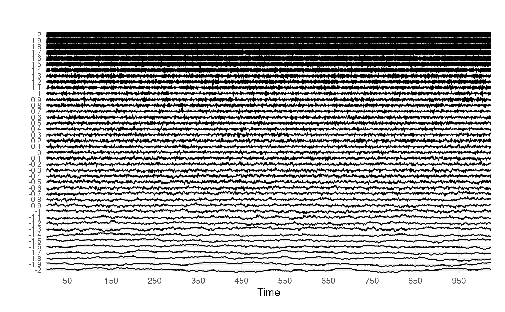

Plot Multivariate Time Series Data
plotTS_multi( df, timeVec = NA, groupVec = NA, useVarNames = TRUE, colOrder = TRUE, doPlot = TRUE, title = "", subtitle = "", xlabel = "Time", ylabel = "", returnPlotData = FALSE, useRibbon = FALSE, overlap = 1 )
| df | A data frame with time series in columns. |
|---|---|
| timeVec | If numeric, the number of the column in |
| groupVec | A vector indicating the names of the time series in the columns of |
| useVarNames | Use the column names of |
| colOrder | If |
| doPlot | If |
| title | A title for the plot. |
| subtitle | A subtitle for the plot. |
| xlabel | A label for the x-axis. |
| ylabel | A label for the y-axis. |
| returnPlotData | Return the restructered data frame used to create the plot (default = |
| useRibbon | Neat for distributions |
| overlap | Multiplier for scaling the series around the y-offset. Default is |
A ggplot object.
